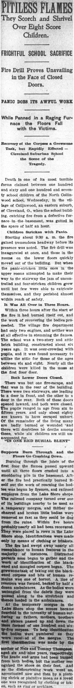

HN-361 · March 7, 1908 · Disasters, Accidents & Emergencies > Urban, Forest & Structural Fires > Building and venue fires
Source: Jasper County Democrat, p. 2 — original page; Smithsonian National Museum of American History.
Report: After fire raced through Lake View School in Collinwood, Ohio, the paper estimated 160–170 children dead, described crowded stairwells and inward-opening doors, and alleged a defective furnace ignited the building. It reported hurried identification of victims and inadequate escape capacity.
Assessment: Smithsonian research records 172 children, two teachers, and one rescuer killed on March 4. The early tally excluded later reconciliations; the decisive broader finding is the inadequate evacuation design and resulting fire-safety reforms. Claims about each door and the precise ignition sequence must be evaluated against investigation records, not only this first narration.
Authentic images retrieved from Hoosier State Chronicles (Indiana State Library). Article crops are located using the archive's own OCR word coordinates and rendered at native crop resolution; article clips are assembled from the archive's own article-block images; page images marked "archive tiles" are stitched from the archive's own tiled page service at its 256-px tile cap; page images marked "issue PDF" are single pages rasterised from the archive's own issue PDF, with the page chosen by matching the headline against the PDF's text layer; page scans are reduced-size access renditions. No images were generated, mocked, or retouched.

Status: Archive images acquired
Authentic archive-owned image renditions were retrieved for this record and are displayed above. The source-acquisition manifest preserves the original pre-acquisition feasibility assessment.
URL (preserved verbatim): https://newspapers.library.in.gov/?a=d&d=JCDC19080307.2.48
Saved research report: Historical_Newspaper_Event_Research_353-377_2026-10-23.md
Evidence note: A newspaper report means a historical publication made a claim; it does not establish that claim as fact. Contemporary reporting is separated from later scholarly context and our own assessment.